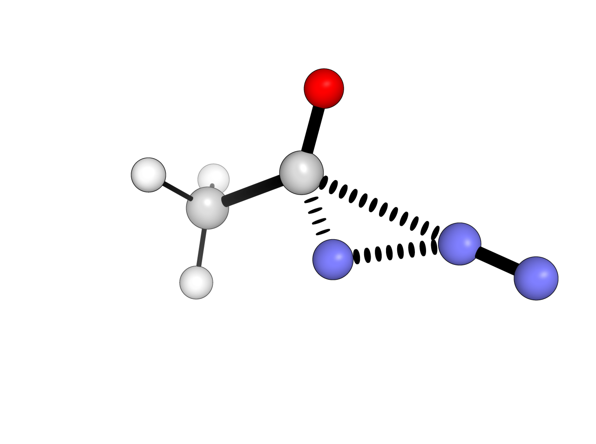
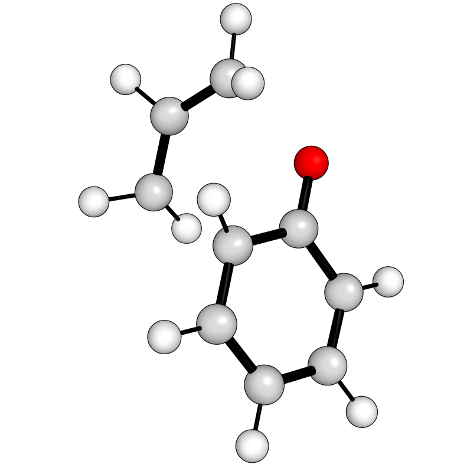

Transition States
Contents
Transition States#
In addition to generating full reaction profiles directly autodE provides automated access to transition states (TSs). TSs are found either from a reaction, where bond rearrangements are found and TS located along each possible path, or from 3D structures of reactants & products, and a given bond rearrangement.
Warning
Transition states have no check that the stereochemistry is correctly preserved.
Default: Reaction#

For a simple Curtius rearrangement copied as a SMILES string directly from ChemdrawTM (selecting reactants and products with arrows and ‘+’ then Edit->Copy As->SMILES) the TS can be located with
import autode as ade
ade.Config.n_cores = 8
rxn = ade.Reaction("CC(N=[N+]=[N-])=O>>CN=C=O.N#N")
rxn.locate_transition_state()
rxn.ts.print_xyz_file(filename="ts.xyz")
Out (visualised)
{kind=link}
Note
locate_transition_state only locates a single transtion state for
each possible bond rearrangment and does not attempt to search the conformational
space.
CI-NEB#
Minimum energy pathways can also be generated using nudged elastic band (NEB) calculations. To find the peak species suitable as a TS guess geometry for the prototypical Claisen rearrangement ([3,3]-sigmatropic rearrangement of allyl phenyl ether)
import autode as ade
reac = ade.Reactant("claisen_r.xyz")
prod = ade.Product("claisen_p.xyz")
# Create an 8 image nudged elastic band with intermediate images interpolated
# from the final points, thus they must be structurally similar
neb = ade.neb.CINEB(initial_species=reac, final_species=prod, num=8)
# minimise with XTB
neb.calculate(method=ade.methods.XTB(), n_cores=4)
# print the geometry of the peak species
peak_species = neb.get_species_saddle_point()
peak_species.print_xyz_file(filename="peak.xyz")
Out:

Out (visualised):
{kind=link}
where the xyz files used are:
20
claisen_r
C -3.98726 0.74520 0.45281
C -4.50106 -0.55204 0.38563
C -2.98263 1.15687 -0.42991
C -2.51083 0.25840 -1.40799
C -3.03021 -1.03906 -1.47415
C -4.01895 -1.44546 -0.57369
O -2.47596 2.40755 -0.27307
C -1.33638 2.94073 -0.85085
H -1.73709 0.54678 -2.10649
H -2.65792 -1.73268 -2.21661
H -4.41017 -2.45344 -0.61689
H -4.35505 1.42777 1.20883
H -5.26464 -0.86554 1.08531
C -0.04683 2.27939 -0.39973
H -1.28052 4.00673 -0.54623
H -1.40915 2.91149 -1.95905
C 0.04395 1.20681 0.40079
H 0.87953 2.71662 -0.75770
H -0.81785 0.69435 0.80686
H 1.01980 0.81060 0.65942
20
claisen_p
C -4.34571 0.63520 0.57310
C -4.49777 -0.68069 0.34490
C -3.23250 1.40679 0.03037
C -2.22119 0.64743 -0.81975
C -2.49978 -0.80349 -0.98985
C -3.56127 -1.41597 -0.45542
O -3.11541 2.59776 0.24431
C -0.59568 3.13650 -1.35460
H -2.24578 1.10277 -1.81941
H -1.78329 -1.35547 -1.58358
H -3.73211 -2.47147 -0.60583
H -5.04256 1.18717 1.18701
H -5.33408 -1.21816 0.77022
C -0.15430 2.17960 -0.56309
H -0.03493 4.04448 -1.49486
H -1.53872 3.08831 -1.87085
C -0.79076 0.85415 -0.27213
H 0.79501 2.30610 -0.05582
H -0.80710 0.70442 0.81159
H -0.14130 0.07563 -0.68902
Note
NEBs initialised from end points use linear interpolation then an image independent pair potential to relax the initial linear path, following this paper.